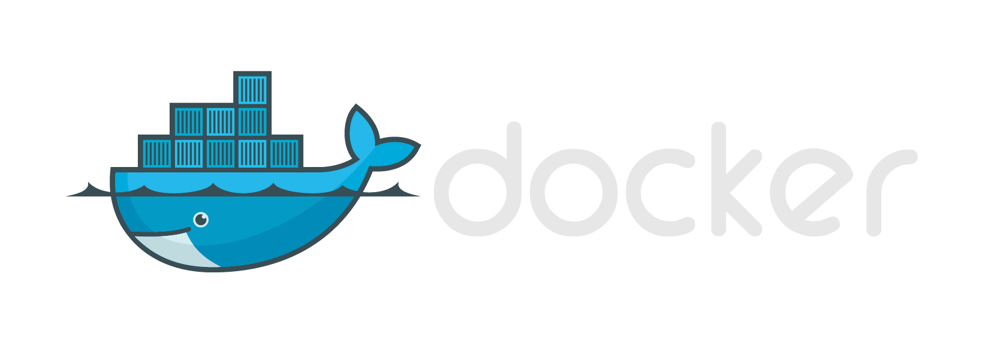

Introdução ao
Luiz Antônio Adolphs Junior
Desenvolvedor de software desde 2006. Gosto por programação, padrões e arquitetura de software.
O que é o Docker, containers e por que usar?
Primeiro, vamos revisar o que é um software!
Wikipedia to the Rescue!
Um programa de computador é composto por uma sequência de instruções, que é interpretada e executada por um processador ou por uma máquina virtual. Em um programa correto e funcional, essa sequência segue padrões específicos que resultam em um comportamento desejado.
Hoje existe um número grande de paradigmas, que se explodem em linguagens de programação
Mostrar gráfico
Muitas linguagens acabam criando dependências e amarrações com o ambiente que estão instaladas.
Essas dependências, com o tempo, ficam difíceis de gerir.
Existem muitos softwares para gerência de ambientes.
Entretanto esse ambiente é sempre criado sob-demanda através de uma receita, não é transportado.
E se pudessemos, além do software, empacotar também seu ambiente?
Docker!
Docker é a plataforma para criação e gerência de containers.
Containers são subsistemas isolados, que rodam em cima do S.O compatilhando recursos em comum.

Com containers ganhamos algumas facilidades...
Podemos transportar nossa aplicação junto com o ambiente (daí o conceito de container hehehe)
Podemos atear fogo nele também!
Containers são stateless!
Podem ser destruidos, desmontados, recriados... E muito rapidamente!
Containers (devem) conter uma responsabilidade única!
Quer rodar um PHP com MySql? Cada um no seu container!
Containers são versionados!
Aí fica fácil testar seu software com uma versão especifica de framework, banco, etc...
Containers são ficam num repositório!
Docker não é apenas um software, é uma plataforma completa.
Olha que bonitinho!
Como usar essa budega?
Não parece, mas estou usando agora mesmo!
docker build
-f "C:\workshop-docker\introducao/Dockerfile"
-t workshop-docker-parte1 .;
docker run
-p 8080:8080
-v "C:\workshop-docker\introducao:/app"
--name introducao
--rm
-it
-t workshop-docker-parte1;
Dockerfile (ou nossa receita de bolo)
FROM node
RUN npm install -g node-static
WORKDIR /
RUN mkdir app
WORKDIR /app
ENTRYPOINT /bin/bash -c "cd /app && static -a 0.0.0.0"
Outro exemplo (alguém conhece o play framework?)
docker run --rm -it -p 9000:9000 ifinavet/playframework
#uma vez dentro do container...
play new hello
cd hello
play run
É muita informação.... Gostaram?
Vamos colocar a mão na massa!
Não perca o próximo encontro!
- https://github.com/LuizAdolphs
- https://bitbucket.org/LuizAdolphs
- https://twitter.com/LuizAdolphs
- luiz.adolphs@gmail.com